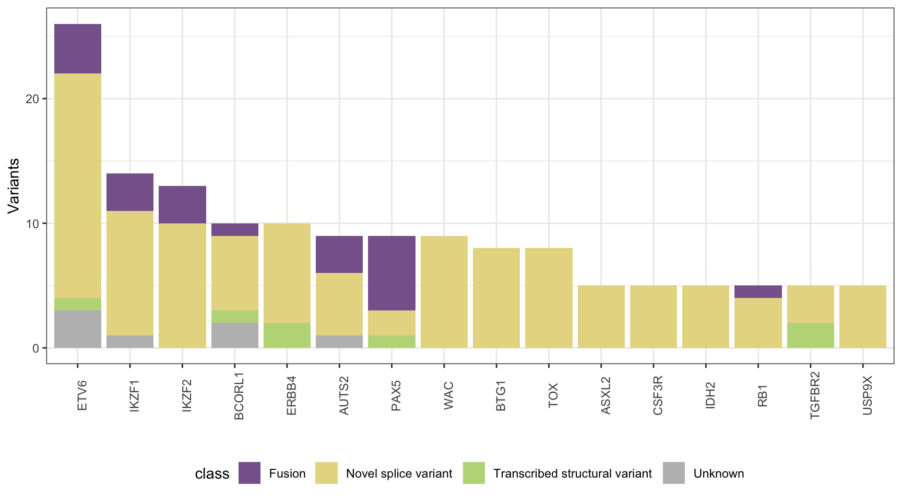

RCH B-ALL
Last updated: 2020-07-03
Checks: 7 0
Knit directory: MINTIE-paper-analysis/
This reproducible R Markdown analysis was created with workflowr (version 1.4.0). The Checks tab describes the reproducibility checks that were applied when the results were created. The Past versions tab lists the development history.
Great! Since the R Markdown file has been committed to the Git repository, you know the exact version of the code that produced these results.
Great job! The global environment was empty. Objects defined in the global environment can affect the analysis in your R Markdown file in unknown ways. For reproduciblity it’s best to always run the code in an empty environment.
The command set.seed(20200415) was run prior to running the code in the R Markdown file. Setting a seed ensures that any results that rely on randomness, e.g. subsampling or permutations, are reproducible.
Great job! Recording the operating system, R version, and package versions is critical for reproducibility.
Nice! There were no cached chunks for this analysis, so you can be confident that you successfully produced the results during this run.
Great job! Using relative paths to the files within your workflowr project makes it easier to run your code on other machines.
Great! You are using Git for version control. Tracking code development and connecting the code version to the results is critical for reproducibility. The version displayed above was the version of the Git repository at the time these results were generated.
Note that you need to be careful to ensure that all relevant files for the analysis have been committed to Git prior to generating the results (you can use wflow_publish or wflow_git_commit). workflowr only checks the R Markdown file, but you know if there are other scripts or data files that it depends on. Below is the status of the Git repository when the results were generated:
Ignored files:
Ignored: .Rhistory
Ignored: .Rproj.user/
Ignored: analysis/cache/
Ignored: data/RCH_B-ALL/
Ignored: data/leucegene/salmon_out/
Ignored: data/leucegene/sample_info/KMT2A-PTD_8-2.fa.xls
Ignored: output/Leucegene_gene_counts.tsv
Ignored: packrat/lib-R/
Ignored: packrat/lib-ext/
Ignored: packrat/lib/
Ignored: packrat/src/
Untracked files:
Untracked: update_results.sh
Note that any generated files, e.g. HTML, png, CSS, etc., are not included in this status report because it is ok for generated content to have uncommitted changes.
These are the previous versions of the R Markdown and HTML files. If you’ve configured a remote Git repository (see ?wflow_git_remote), click on the hyperlinks in the table below to view them.
| File | Version | Author | Date | Message |
|---|---|---|---|---|
| html | 9141a03 | Marek Cmero | 2020-06-24 | Build site. |
| html | e9e4917 | Marek Cmero | 2020-06-24 | Build site. |
| html | 0b21347 | Marek Cmero | 2020-06-11 | Build site. |
| Rmd | fa6bf0c | Marek Cmero | 2020-06-11 | Updated with new results; improved tables |
| html | fa6bf0c | Marek Cmero | 2020-06-11 | Updated with new results; improved tables |
| Rmd | 3702862 | Marek Cmero | 2020-05-12 | Removed MLM samples from final B-ALL results |
| html | 3702862 | Marek Cmero | 2020-05-12 | Removed MLM samples from final B-ALL results |
| html | a166ab8 | Marek Cmero | 2020-05-08 | Build site. |
| Rmd | f504dcb | Marek Cmero | 2020-05-08 | Added variant found stats for RCH B-ALL analysis |
| html | a600688 | Marek Cmero | 2020-05-07 | Build site. |
| Rmd | 0fde0b8 | Marek Cmero | 2020-05-07 | Added RCH B-ALL analysis |
# util
library(data.table)
library(dplyr)
library(here)
library(stringr)
# plotting/tables
library(ggplot2)
library(gt)options(stringsAsFactors = FALSE)source(here("code/leucegene_helper.R"))RCH B-ALL results
Here we analyse the results of MINTIE run on the RCH B-ALL cohort.
rch_ball_results_dir <- here("data/RCH_B-ALL")
rch_ball_results <- list.files(rch_ball_results_dir, full.names = TRUE) %>%
lapply(., read.delim) %>%
rbindlist() %>%
filter(logFC > 5)
# rename IDs to be consistent with doi: 10.1182/bloodadvances.2019001008
rch_ball_results$sample <- rch_ball_results$sample %>%
str_split("^EKL-|^EKL|^PE15R-MLM-") %>%
lapply(., str_c, collapse = "") %>%
unlist() %>%
str_c("B-ALL_", .)
# list of ALL-associated genes
all_genes <- read.delim(here("data/ref/ALL_associated_genes.txt"), header=FALSE)$V1Variant genes called
Supplementary Figure 4 in the MINTIE paper. Shows the overall number of variant genes called by MINTIE in the RCH B-ALL cohort.
results_by_gene <- get_results_by_gene(rch_ball_results)
results_summary <- results_by_gene[, length(unique(gene)), by = "sample"]
results_summary <- results_summary %>% arrange(desc(V1))
results_summary$sample <- factor(results_summary$sample,
levels = results_summary$sample)
results_summary %>%
summarise(min=min(V1),
median=median(V1),
max=max(V1)) %>%
gt() %>%
tab_header(
title = md("**Summary of variant genes called in B-ALL cohort**")
) %>%
tab_options(
table.font.size = 12
) %>%
cols_label(
min = md("**Min**"),
median = md("**Median**"),
max = md("**Max**")
)| Summary of variant genes called in B-ALL cohort | ||
|---|---|---|
| Min | Median | Max |
| 11 | 38 | 531 |
ggplot(results_summary, aes(sample, V1)) +
geom_bar(position=position_dodge(width=0.8), stat="identity") +
theme_bw() + xlab("") + ylab("# variant genes") +
scale_fill_brewer(palette = "Set2") +
theme(legend.position = "bottom",
axis.text.x = element_text(size = 7, angle = 90))
ALL-associated genes called
Supplementary Figure 5 in the MINTIE paper. Shows recurrently called variants in ALL-associated genes in RCH B-ALL cohort.
all_gene_results <- filter(results_by_gene, gene %in% all_genes) %>%
collate_vartypes()
paste("We found",
all_gene_results$variant_id %>% unique() %>% length(),
"variants across",
all_gene_results$gene %>% unique() %>% length(),
"unique genes") %>%
print()[1] "We found 243 variants across 107 unique genes"# make list of recurrently mutated genes
recurrent_genes <- group_by(all_gene_results, gene) %>%
summarise(var_count = length(unique(variant_id))) %>%
filter(var_count > 4) %>%
arrange(desc(var_count))
# make summary data frame
all_gene_summary <- group_by(all_gene_results, gene, class, sample) %>%
summarise(var_count = length(unique(variant_id))) %>%
filter(gene %in% recurrent_genes$gene)
all_gene_summary$gene <- factor(all_gene_summary$gene,
levels = recurrent_genes$gene)
# define category colours and plot
cols <- c("#87649aff",
"#bdd888ff",
"#e7d992ff",
"#bdbdbd")
names(cols) <- c("Fusion",
"Transcribed structural variant",
"Novel splice variant",
"Unknown")
ggplot(all_gene_summary, aes(gene, var_count, fill = class)) +
geom_bar(sta = "identity") +
theme_bw() +
xlab("") +
ylab("Variants") +
scale_fill_manual(values = cols) +
theme(legend.position = "bottom",
axis.text.x = element_text(angle = 90))
# print stats of top 3 gene
all_gene_summary %>%
group_by(gene) %>%
summarise(total_vars = sum(var_count)) %>%
pull(gene) %>%
as.character() %>%
head(3) %>%
lapply(., get_gene_stats, all_gene_summary) %>%
unlist() %>%
str_c("\n") %>%
paste0(collapse = "") %>%
cat()We found 26 variants across 8 samples in ETV6
We found 11 variants across 2 samples in IKZF2
We found 9 variants across 6 samples in IKZF1
sessionInfo()R version 3.6.1 (2019-07-05)
Platform: x86_64-pc-linux-gnu (64-bit)
Running under: CentOS Linux 7 (Core)
Matrix products: default
BLAS: /config/RStudio/R/3.6.1/lib64/R/lib/libRblas.so
LAPACK: /config/RStudio/R/3.6.1/lib64/R/lib/libRlapack.so
locale:
[1] LC_CTYPE=en_AU.UTF-8 LC_NUMERIC=C
[3] LC_TIME=en_AU.UTF-8 LC_COLLATE=en_AU.UTF-8
[5] LC_MONETARY=en_AU.UTF-8 LC_MESSAGES=en_AU.UTF-8
[7] LC_PAPER=en_AU.UTF-8 LC_NAME=C
[9] LC_ADDRESS=C LC_TELEPHONE=C
[11] LC_MEASUREMENT=en_AU.UTF-8 LC_IDENTIFICATION=C
attached base packages:
[1] stats graphics grDevices utils datasets methods base
other attached packages:
[1] gt_0.2.1 ggplot2_3.3.1 stringr_1.4.0 here_0.1
[5] dplyr_1.0.0 data.table_1.12.6
loaded via a namespace (and not attached):
[1] Rcpp_1.0.2 pillar_1.4.4 compiler_3.6.1 git2r_0.26.1
[5] workflowr_1.4.0 tools_3.6.1 digest_0.6.21 evaluate_0.14
[9] lifecycle_0.2.0 tibble_3.0.1 gtable_0.3.0 checkmate_2.0.0
[13] pkgconfig_2.0.3 rlang_0.4.6 commonmark_1.7 yaml_2.2.0
[17] xfun_0.10 withr_2.1.2 knitr_1.25 generics_0.0.2
[21] fs_1.4.1 vctrs_0.3.1 sass_0.2.0 rprojroot_1.3-2
[25] grid_3.6.1 tidyselect_1.1.0 glue_1.4.1 R6_2.4.0
[29] rmarkdown_1.16 farver_2.0.3 purrr_0.3.2 magrittr_1.5
[33] whisker_0.4 backports_1.1.4 scales_1.1.1 ellipsis_0.3.0
[37] htmltools_0.4.0 colorspace_1.4-1 labeling_0.3 stringi_1.4.3
[41] munsell_0.5.0 crayon_1.3.4